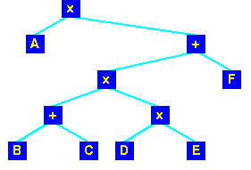
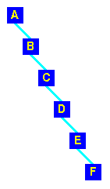

| Data Structures and Algorithms |
| 8 Searching Revisited |
Before we examine some more searching techniques, we need to consider some operations on trees - in particular means of traversing trees.
| pre-order |
|
| in-order |
|
| post-order |
|
If we traverse the standard ordered binary tree in-order, then we will visit all the nodes in sorted order.
|
If we represent the expression:
as a tree: |
 |
tree_search(tree T, Key key) {
if (T == NULL) return NULL;
if (key == T->root) return T->root;
else
if (key < T->root) return tree_search( T->left, key );
else return tree_search( T->right, key );
}
is simple and provides us with a O(log n) searching routine
as long as we can keep the tree balanced.
However, if we simply add items to a tree,
producing an unbalanced tree is easy!
|
This is what happens if we add the letters in that order to a tree: Not exactly well balanced! |
 |
Key terms |
| Continue on to Red-Black Trees | Back to the Table of Contents |